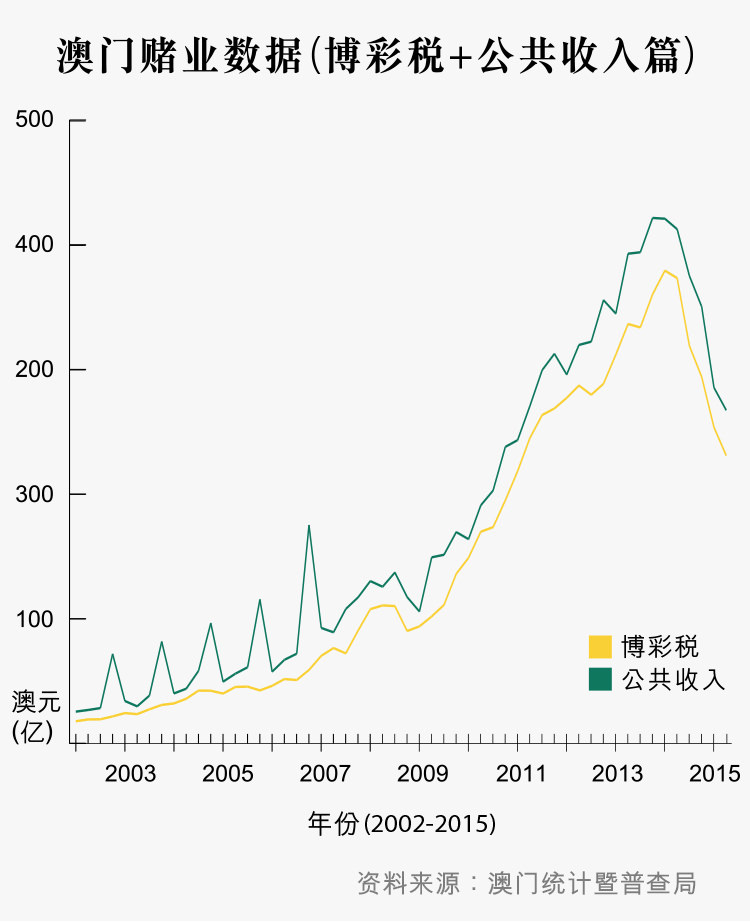
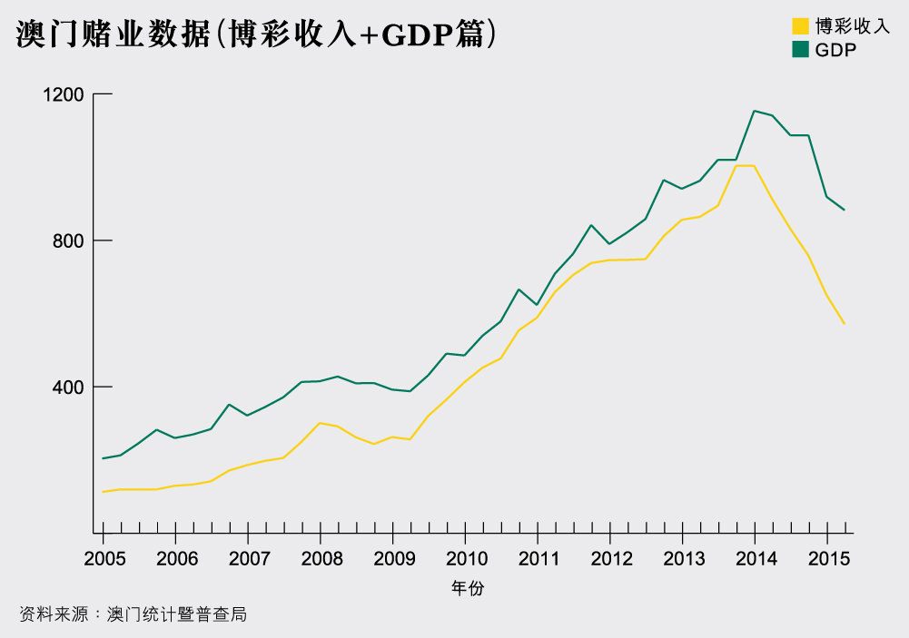
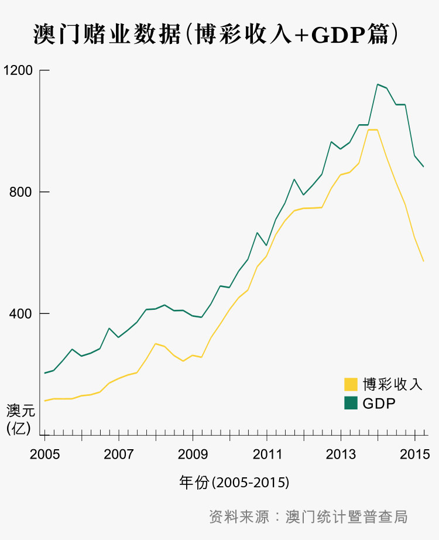
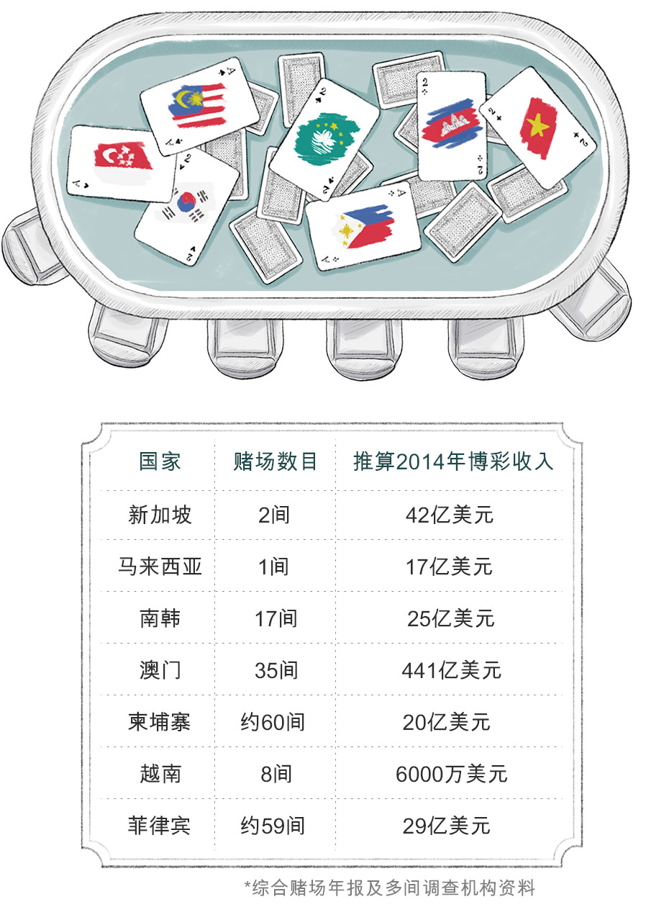

2002
- 2002
- 2004
- 2006
- 2007
- 2009
- 2011
- 2015
说到澳门，大概九成人都会想到赌业。百家乐、买大小、廿一点，这些大家都可能熟悉，但在贵宾厅中一局下注数千万元，一晚输赢10亿元的世界，你我或许难以想像。
澳门人靠赌养家，澳门靠赌业兴邦。小城将自己的命运押注这场赌局，筹码近日却悄然换上内地打贪、外围经济不明及周边竞争加剧。烟花照耀下，黄金依然看似遍地，但澳门人都知道，小城正在扬起变奏，就像2009年被列入联合国人类非物质文化遗产的一段南音……
往下阅读
PART 1赌城变迁，由的士司机说起
过去数年，澳门市民和游客都说“截的士难”。难，因为的士司机不愁生意，拒载、不按表收费一度成为常态，但当赌业崩围，的士生态也再度调整。端传媒访问从来不乘的士的金麟贵宾会总经理何大志，又邀请的士司机 Sam哥，接载美联物业澳门行政总裁张一辉、玛嘉烈葡挞店主Margaret畅游澳门，听他们细说赌城故事。
PART 2 赌厅倒闭，赌业面临大整肃
游客在葡京娱乐场外。
过往大半年，澳门商人何大志亲眼看着自己一手创建的赌厅一间接一间倒闭。在澳门赌业高峰的2013年，他一人掌管6间赌厅，现时一间不剩。
“以前我们是拉客赌钱，现在变成债主，天天追数。”何大志坐在私人防弹车，一边载着记者在邻近赌场的澳门皇朝区游车河，一边接受端传媒记者访问：“我现在未追回的赌债，大约5亿元。”
在约64万人口的澳门，何大志的故事是赌业衰落的缩影。从2013年第4季起，澳门赌业由高峰直插谷底。当时每月赌收都高于300亿元（澳门元，下同），但其后赌收连续15个月下跌，才不过一年多，赌收滑落到每月不足200亿元，蒸发超过三分之一。
澳门政府10月20日公布，2015年第二季博彩收入，占本地生产总值降至64.7%，为6年以来最低。


a(1) 月度及季度公共收支采用财政局中央帐目，年度在未有综合收支表前采用财政局中央帐目，至每年6月左右，财政局完成上年年度综合收支表后，本局采用综合收支取代中央帐目。故此月度及季度收支的总和不等於年度收支。
a1 (1) 由二零零七年起，财政局开始编制公共会计年度合併帐，故此二零零七年的博彩税总收入包括澳门基金会从博彩公司收到的拨款(博彩毛收入的1.6%)，二零零九年由於资料未齐，故此博彩税总於年度收入。
十一不再黄金 赌厅厅主悲歌奏起
每年中国大陆的十一国庆黄金周，都是澳门赌业的黄金期。然而今年10月1日，当烟花在马交海面亮起，从赌业大亨、贵宾厅厅主、赌场荷官到普通市民，都开始感受到今年烟花特别暗淡。一连六天的黄金周，端传媒记者到澳门实地观察，也看到赌场人流比往年大幅减少。
在永利澳门娱乐场，每局最少投注1000元的“百家乐”赌枱无人问津，即便是300元以下的低注码赌枱，赌客只有三三两两，与之以往数十人围着一张赌枱的情况大相径庭。
10月16日，美国赌业大亨、澳门博彩企业“永利澳门”（港交所编号：1128）主席史提芬永利（Stephen A. Wynn）公布了集团第三季业绩，纯利大跌71.9%，他少有地以沉声线重道：“上一季度的业绩，一如我们对上几个季度所看到的，就是失去了接近一半的贵宾厅业务，更甚的是，业务可能仍在收缩……”2014年，永利在澳门博彩业的市占率为9.2%，另外5间澳门博企包括美高梅、新濠博亚娱乐（新濠博亚）、金沙、银河娱乐（银娱）及澳门博彩控股（澳博），除了银娱的贵宾厅业务按年上升一成外，其余四间都分别录得超过一成的跌幅，金沙贵宾厅业务跌势最急，按年倒退超过两成。
“今年黄金周，贵宾厅几乎都没有人来赌钱。”何大志是澳门“金麟贵宾会”的老板，他早在1979年开始在澳门经营赌厅，在2010至2013年高峰期时独资经营六个贵宾厅，全部位于美高梅娱乐场、星际娱乐场及新葡京娱乐场。
“当时6个贵宾厅加起来，每年‘转码额’高达3000亿元。”何大志回忆。
“转码额”是澳门赌业术语。澳门赌场分为中场和贵宾厅，以注码大小划分。中场是赌场中针对大众市场的业务，赌注大众化，由数百至数千元不等，主要吸纳一般旅客和澳门市民下注。贵宾厅的赌客则主要是投注额较大的客户，例如来自内地的阔绰游客。
赌客到贵宾厅赌钱，赌额动辄数百万元，下注前亦必须先购买“泥码”，俗称“迭码仔”的博彩中介人，拉拢赌客兑换泥码，可以从中获得佣金。这种筹码只可用作投注，而不能兑换现金，赌客只可以透过在赌枱上赢得的现金码，才可以换取现金。赌客向贵宾厅购买“泥码”的过程，行内称为“转码”，何大志说的“转码额”，就是他经营的贵宾厅，兑换予赌客的泥码数额。
何大志表示，贵宾厅的投注额比中场大得多，赌客每次下注一、二百万也很平常。何大志最高录得的一年转码额有3000亿元，而根据公司年报，经营葡京和新葡京等赌场的澳博，2013年贵宾厅转码额是全澳最高的，全部贵宾厅的转码额，加起来约为20000亿元。而中场投注额则只有400亿，可见贵宾厅业务对各家赌场有多重要。
然而，从去年开始，这类豪客已经大幅减少：“贵宾厅的生意少了三分之二，我估计在中央的紧缩政策下，钱走进澳门不再那么方便。”何大志含着雪茄，徐徐呼出烟圈，唏嘘地说。

两名市民在大三巴前的阶梯旁休息。
赌厅倒闭 赌场不找钱
澳门赌业收缩，何大志的赌厅也从2014年底开始，陆续结束营业。何大志向记者出示一批约值150万元的泥码。这是2014年11月，位于新葡京娱乐场2楼的“金麟贵宾厅”结业时剩下的部分泥码。他要求澳博将他手上的泥码兑回现金，但却遭到对方拒绝。何大志不忿说：“澳博坚持要等他们检查赌场帐目，但其实每个贵宾厅都用真金白银买入泥码，结业时都可以兑换现金。”
何大志至今仍未追回款项，他已经报警求助，希望从司法途径向澳博取回现金。他觉得事件反映一个现实——赌厅不断倒闭，博彩企业及公司亦正面临前所未有的财政危机：“他们这一点点钱也不愿兑回，可见现金流情况及财政问题肯定非常严重。”有30年赌业经验的何大志推断说。
何大志笑言，以前赌厅的主要工作是拉客赌钱，现在他们的主要工作变成债主追回欠款：“我们现在的主业变为‘收数（追债） ，经济好时，大部分客人欠下赌债都有借有还，现在很多内地赌客，借了钱却去如黄鹤，虽说签了借据，但由于内地政府不承认欠单，只要‘债仔’（借贷人）置诸不理，借据就失去效力。”
何大志派往内地讨债的职员，甚至被借贷人暴力对待，欠款也无从追回：“以往生意好，讨不回的欠债可以用利润补回，现在根本没有人来赌，于是赌厅纷纷倒闭。”何大志现时一间赌厅也没有了，他打算放弃赌业，从事内地农产品交易生意。何大志承认自己在这个澳门赌盘上变成输家，但他相信输家陆续有来。

新葡京酒店与葡京娱乐场之间的马路，一位外卖员在摩托车上聊电话。
多金事件
这一场澳门赌业危机，正如何大志所言，正一直蔓延，不只是赌主赌客，甚至波及普通市民。
2015年9月，根据《彭博》报导，在永利澳门旗下娱乐场经营贵宾厅的多金集团，有贵宾厅主管亏空20亿元潜逃，震撼业界。
9月11日，多金集团在消息曝光后发表声明，指称一名前帐房总监“进行未经允许的事情，严重影响公司利益及声誉，并涉及欺诈”。虽然未有确认亏空数额，但事件曝光后，大批赌客及市民到赌厅提取存款，但都无法取回。
原来以往赌厅会提供高息，吸引赌客或市民，透过迭码仔将大笔款项寄存在赌厅。何大志说：“以往有一些赌厅利息高达两厘，完全不健康。他们吸纳的客户，多是不了解情况的内地赌客。很多赌厅根本不够资金偿还利息，会将客人存款转借其他赌客，赌客再将借贷输掉，赌厅便能借此大捞一笔。”
多金事件被亏空的款项，据悉部分正是这类存款。9月24日，40多名赌客在永利酒店门外，举起“贵宾厅无法无天，诈骗客户存款”的横额抗议，又到多个政府部门递交请愿信及报警求助。
舆论都希望政府立法规管，保障贵宾厅借贷合约。经济财政司司长梁维特9月22日表示，将会制定指引，希望业界遵守，但被问及何时发出指引时，梁维特没有正面回应：“大家都知道我们没有偷懒，很努力开会。”

澳门赌场外面的大萤幕放映着「热烈庆祝国庆66周年」，两位韩国旅客坐着人力车，在跑车前停下。
赌业收缩 是时候整肃？
“如果博彩业仍然好景，这些事件根本不会被揭露，贵宾厅业绩疲弱，令多金事件暴露人前，但我觉得这只是迟早会出现的问题。”澳门大学政府与行政学系助理教授陈建新说。
他认为当这些漏洞一一浮现时，正标志着澳门博彩业需要正式作规范化发展：“最近的低迷情况，令政府可以将一些过往不被留意的问题规范化，我反而觉得是好事。一直赚大钱，没有问题发生，政府就很难介入或下定决心要求业界改变。正如98年金融风暴，当年对香港也有很大影响，之后连续数年通缩，经济也出现负增长。但回头看，正因为有这次事件，才将以往一些不正常行径纠正了。”
致富证券负责分析濠赌股的分析员关凯威亦有类同说法，他接受端传媒访问时表示：“赌厅现在处于汰弱留强阶段，我觉得多金事件反而是一个机会，让澳门赌厅取得平衡点。”
转营中场
政府开始立案规范，博企亦开始内部调整，以图扭转颓势。
以往博企都侧重贵宾厅业务，主力拉拢赌注数以百万元计的豪客。现时澳门的六间博彩企业，大部分都是贵宾厅收入占比较高，以2014年底的数据为例，银娱75%的收入都是来自贵宾厅。但现时贵宾厅转码额明显下降，有五家博企都录得超过一成跌幅。分析员刘志斌说：“澳门赌场必须转营，部分博企正落力发展‘中场’和非博彩业务。”
在发展“中场”业务方面，金沙显然走得较快，在2014年第二季，其中场收入已经超越贵宾厅。而金沙全年的中场收益，高达381亿港元，占金沙业务收益52.6%。其余五间博企在贵宾厅的收入，则仍然占较大比重，大约占五至六成。
若以投注额计算，金沙的中场业务也明显较佳，去年金沙的中场投注额，达到1700亿港元，比银娱、新濠博亚、永利、美高梅四家博企的总和还要高。10月22日，“金沙中国”主席艾德森公布季度业绩时亦说，金沙的中场的业务稳定。
澳门政府经济财政司司长梁维特，10月20日接受传媒访问时指，27日开业的新濠影汇，已获批250张赌枱，将全部设于“中场”，成为澳门首个没有贵宾厅的大型赌场。除了新濠影汇，银河二期最近获批的赌枱，亦将全部设在中场。银娱表示，期望博彩企业可扶助当地中小企及发展家庭娱乐。


一荣俱荣 一输全输
澳门只有31平方公里、人口约64万，是中国境内唯一可以合法经营赌场的地方。正因如此，澳门一直长期依赖博彩业生存。澳门赌业源远流长，1847年澳葡政府将澳门赌博合法化，至1930年，澳门明确博彩专营权，专营权下第一个澳门赌场应运而生。2002年，澳门开放赌权，外资公司进军澳门博彩业，赌场由11间急升到35间，博彩业收益如井喷一样急升。博彩税收益占政府公共收入比率，由2002年约五成上升到2014年的八成。库房水浸的澳门政府，连年向市民派钱，澳门市民亲身感受到博彩业带来的好处。
然而，当今日赌业寒冬严重影响澳门经济，整个社会似乎都受到影响，全因澳门大部分人都依靠赌业糊口。截至今年第二季，澳门有超过5万7千人是博彩业全职雇员，占澳门就业人口两成，平均五名在职人士中，有一人以博彩业维生。而的士、餐饮、零售等多个行业，全都与赌业息息相关。赌场员工在内的30名凼仔王府饭店职员，10月20日示威抗议欠薪。一时之间，澳门经济的不景气跃进眼帘，澳门人开始明白，赌桌上数以万亿元计的注码，能将小城捧上天，亦能令澳门陷入危机。
“新澳门学社”前理事长苏嘉豪对端传媒说，澳门的问题在于产业极度单一化：“所有行业只要连带着博彩业，都可以在市场上分一杯羹，但是一旦脱离了博彩业，产业和中小企业都无法生存。当赌业有任何风吹草动，澳门无法经得起财政波动，政府的收入会受到很大的冲击，对民生也有很大的影响。以前大家沉醉在这个龙头产业带来的好处，当现在稍为回落的时候，这问题便陆续浮现，这是政府和市民都不能回避的经济结构危机。”
2015年7月1日，中国当局放宽内地人过境澳门规定，由5日提升到7日。而今年十一黄金周，到访澳门的内地旅客数字，达到破纪录的90万人次，比往年上升7%。致富分析员刘志斌说：“这算是近期一个利好消息，但澳门赌收暂时仍未见起色，9月只有大约170亿元，趋势仍然继续下降，看不到明显的复甦。”
澳门联合博彩研究的分析师Grant Govertsen，日前接受英国《金融时报》采访称，目前环境下，赌场以新供应推动市场增长，仍然会很困难。
“希望澳门政府可以改善赌业环境，以前殖民时代，葡国佬来这里只为赚钱，我们不会指望他们解决问题；现在是当家作主的时代，政府应该更积极解决赌业面对的难关。”厅主何大志落寞地说。

赌厅厅主何先生。
PART 3黄金周，黄金不再


2015年10月1日，澳门上空又再发放烟花。这是澳门每年一度的国际烟花比赛汇演，澳门市民和游客多会聚集在永利赌场旁的南湾湖畔欣赏这盛事。不过今年的澳门烟花却似乎没有以往的灿烂。
十一黄金周，一向是澳门的士司机王申赚钱的黄金档期。然而，刚过去这个黄金周，虽然当局公布今年游澳的内地旅客人次破纪录的90万，但王申眼中，今年却是罕有的冷清，他算一算，生意少了两至三成：“以往的黄金周，议事亭前都迫满游客，有时人多得要实施人潮管制，今年就不用了，根本没有人。”永利和葡京赌场门外的的士站，也不再看到乘客抢搭的士，罕有地出现“车等人”的情景。
贵宾厅厅主何大志表示，以往黄金周澳门酒店房间紧张，赌场会以较高价格预留房间予赌厅，以便他们招待VIP赌客：“黄金周酒店房价可以抢高至最少五千元，今年却不用预留了，上网随时都可以订到，而且只要千多元。”传媒报道今年黄金周期间，三星级至五星级酒店，平均入住率约八成六。酒店房价下降近两成二，平均约一千四百多元一晚。
何大志又说，他在黄金期间，到一间赌场内的高级食肆吃饭，食肆经理竟问他可否帮忙多订两桌：“他走过来跟我说，何生帮帮忙吧，带多些人来吃饭吧。以往赌客赢钱，就到这些中菜厅，点最贵的菜色，现时呢﹖没有豪客到赌场，连食肆经理都跑不够数。”而在赌场内外的奢侈品店也没有抢买情形，更多的只在橱窗外散步；连路边小摊，店主也在打呵欠。
的士驶到永利赌场门外，王申把的士泊好，街上却只有疏疏落落的游客。端传媒记者问王申有没有为生计及未来担心呢﹖他很有澳门精神地回答说：“不怕，我想中央应该会照顾澳门的。”
PART 4 大赌兴邦，亚洲赌业大洗牌
傍晚的大三巴，大三巴牌坊是来澳游客必到的景点之一。
在澳门土生土长的Margaret，1989年在澳门路环开了第一间小饼店，自此成为澳门最著名葡挞店的老板娘。她特制的澳门葡挞，是不少旅客到澳门必买的手信。近年赌业急速发展，越来越多旅客到来，Margaret的葡挞店也受惠。
“小赌养家活口，大赌兴邦立国”—— 澳门人有这句顺口溜，正是这个小城故事的写照。Margaret与女儿的两间葡挞店，分别位于澳门半岛和路环，往来两间店铺，都一定会经过凼仔。Margaret每次坐车经过，看见凼仔到处都是地盘，多个新赌场的兴建工程正如火如荼，心里总有疑问：“可否不要再发展那么多赌场﹖到底有没有那么多人来赌呢﹖”

其他赌场抢客
Margaret的疑问其实不无道理。随着内地政府打贪，中国经济收缩，澳门博彩收入自2014年开始锐减。同一时间，近年亚洲其他地区赌场纷纷落成，亦分薄了部分客源。
2002年开放赌权以后，澳门迎来黄金10年。世界银行2014年数据显示，澳门人均GDP达到96038美元，较新加坡的五万六千多美元，及香港的四万美元还要高，成为亚洲首位。澳门以赌兴邦的成功经验，成为了不少亚洲地区参考的对象，争相以开赌作为经济发展新动力。
当中，新加坡是最典型例子。新加坡在2010年开赌，云顶新加坡旗下的圣淘沙名胜世界，除了赌场外，还有主题公园及不同游乐设施，吸引家庭旅客。而金沙旗下的滨海湾金沙娱乐城，则有大型会展设施和博物馆等，主打商务旅客。新加坡去年的入境旅客人次，达到1510万，较2009年赌场开幕前的970万，上升55.7%。而两个赌场的博彩收入，去年超过四十二亿美元，占GDP 1.4%。

游客在名牌店的灯光幕墙前等待国庆烟花。
南韩开赌 做大个饼？
新加坡业务转趋平稳，云顶集团进一步伙拍香港蓝鼎国际，进军已有17间赌场的南韩，在济洲岛兴建赌场渡假村，扩大亚洲赌业版图。
蓝鼎国际发展投资关系部经理彭靖欣接受端传媒专访时说：“渡假村有大型赌场，但也有包括七个区域的主题公园、会展设施、酒店和住宅等，预计将于2017年逐步开幕。济洲现时没有其他类似的旅游设施，我们相信将来旅客到济洲旅游，都一定会到我们的渡假村玩乐。”
根据南韩法规，全国只有一间赌场，容许南韩国民赌博，其余16间以及新开的赌场，都只对旅客开放。彭靖欣坦白表示，渡假村目标正是中国市场：“很多中国人喜欢赌博，随着中国人越来越富裕，会有更多人有能力出国旅游和赌博，而北京和上海等一线城市，乘飞机到济洲，才不过一小时就到。”她认为中国旅游赌博的渗透率仍然很低，市场有很大增长空间。

兴建中的澳门巴黎人艾菲尔铁塔。
现时韩国16间赌场，中国赌客约占八成。近日澳门赌业负面消息不断，贵宾厅收入大幅下降，有指是中国经济向下，及打贪令赌客大减，这会否影响蓝鼎的部署呢﹖彭靖欣表示，集团早前收购济洲一个小型赌场，翻新后在2015年1月开幕，共有26张赌枱，包括贵宾厅和中场业务。开业大半年，赌场大部分客人都是来自中国，未见受中国打贪的影响。她分析指，虽然济洲和澳门都是看重中国市场，但赌客类型稍有不同：“济洲更着重的是旅客整个旅游体验，我们是为能够出外旅游的中国人，提供一个新选择，并非从澳门手中抢客，而是把饼做大了。”
美银美林全球研究部亚洲博彩及酒店业主管吴希凌去年接受传媒访问时表示，亦认同亚洲赌业竞赛并非“零和游戏”，因为亚洲区30亿人口，只有百多间赌场，对比人口3亿就有一千间赌场的美国，亚洲市场的增长空间仍然庞大。
然而，致富证券投资销售部资料研究组分析员关凯威却持相反意见，他认为亚洲多国基于各种原因，禁止本地人赌博，例如马来西亚大部分国民信奉伊斯兰教，所以当地唯一赌场，也基于宗教理由禁止本地人赌博，只对旅客开放。关凯威说：“亚洲区内有不少伊斯兰教国家，对赌博的态度与美国很不同，所以亚洲赌业增长，未必如预期中乐观。”
数据反映现实，澳门去年全年赌收大约是440亿元美金，较2013年下跌11亿元美金。亚洲第二大赌业市场新加坡，这两年赌收没有太大增长，维持四十亿元左右。至于第三大市场南韩，2013年全年赌收约有20亿元美金，去年则有24亿元美金。关凯威说：“看一看南韩，是否真的把澳门的赌收分了过去﹖可能有一点点，但其他国家的收益，其实整体而言也是差不多。所以我的看法是，增长是缓慢下来了，现时的市场规模应该差不多饱和。”

蓝鼎国际在济洲兴建渡假村，进军南韩赌业。
留客拉客
面对区内竞争，澳门要“留客拉客”必须探寻出路，发展多元化旅游业，加强非博彩元素成为基调，博企都着力重新拉动赌业增长。
澳门6间博彩营运商，未来两年都有新赌场落成，全部新赌场都属于综合式渡假村，非博彩元素占整体设施八至九成。其中新濠博亚旗下的新濠影汇，将以电影为主题，提供摩天轮、综艺馆及机动游戏等设施，今年10月27日开幕。而暂定2016年开幕的澳门巴黎人，由金沙集团发展，主打会议展览及宴会场地。
银娱集团主席吕志和，在今年8月的业绩公布会上则指，业界已清楚意识到，不能单靠赌博业务推动整体业务增长，会转型发展全方位旅游及娱乐业务。吕志和预期成功转型后，澳门博彩业有望在一年内重拾增长动力。
10月13日，美高梅中国主席何超琼承认，澳门博彩收入增幅不可能永远达双位数，但这并不代表旅游业崩溃，澳门目前只是进入资源优化阶段，可以更好地推陈出新，吸引游客。她表示，长远目标是要带动旅游产业链上各个环节发展，包括会展、旅游、娱乐、休闲设施等，逐步完成硬件配套。
澳门各行各业，过去几年或多或少都受惠于赌业。除了近六万名博彩业全职雇员外，由餐厅、的士司机到地产代理，收入都与博彩业兴衰有关。
Margaret的葡挞店，2010年一个葡挞才卖7元，现时要10元一个，但依然大排长龙。豪客减少，葡挞店不算首当其冲，但Margaret认为生意减少一点，反倒让她机会喘一口气：“生意是生意，但我更希望像以往那样，可以跟客人坐在店外谈天。”

玛嘉烈葡挞创办人Margaret。
澳门大学政府与行政学系助理教授陈建新认同澳门经济过度依赖博彩业，但他认为澳门只有60多万人口，产业单一无可避免：“试想想，香港有700多万人口，是澳门的十倍，但也不会有10个像澳门赌业那么大规模的产业，所以澳门产业单一，我形容为有其必然性。”
陈建新指出，澳门政府已经意识到问题所在，近年正着力推动经济转营。但他认为，要发展全新产业需要较长时间，反而以赌业为中心发展周边产业，例如旅游业和会展业等，似乎较为可行。政府近年推动盛事，例如每年都会举办的格兰披治大赛、烟花节等，又成立二亿元的文创基金，都可以带旅游业的多元发展。
“新澳门学社”前理事长苏嘉豪则认为，即使没法在一时三刻发展多元产业，在龙头产业上应作出限制：“例如非博彩元素和博彩元素的比例可否调整？非博彩元素的比例可否占一半以上？现有的六个赌牌即将到期，在2020年需要续约，政府今年正进行中期检讨，政府是‘够牙力’（有足够议价能力），在这个时刻提出要求，但之后就未必叫得动这些博企。”
陈建新总结说：“很多人说澳门产业结构有问题，但不可能发展其他产业，就放弃赌业，也不可能因为赌业成功，就不去推动其他产业。”
他认为澳门应该走的，是双轨并行的路。Margaret也认为，澳门除了赌业以外，也应放慢发展步伐，保留澳门原有的简单和宁静，寻回属于这个小城的调子。
-
记者
赵燕婷、黄铭浩
-
摄影
Billy H. C. Kwok、卢翊铭、叶家豪、杨帆
-
文字编辑
陈倩儿
-
资料搜集
Jan Wong
-
图片编辑
Anthony Kwan
-
美术设计
Sarene Chan、Leumas To
-
网页设计
DocumentOnReady Ltd.
-
监製
李皑茵